El Arte de Fotografiar el Olvido
El hoy llamado URBEX es la práctica de recorrer lugares que quedaron en el olvido.
La palabra proviene de "Urban Exploration" y consiste en explorar lugares que ya nadie habita,
donde queda esa energía casi palpable, como si los ecos del tiempo no quisieran irse del todo.
Cada rincón guarda una memoria, cada pared susurra una historia, cada objeto olvidado es un testimonio silente de lo que fue.
Todo está envuelto en una atmósfera melancólica.
Donde el común de la gente ve un lugar descuidado y algo tétrico, justo ahí, veo historias y escenarios perfectos para fotografiar.
Me dedico a esto de manera amateur. No cuento con una cámara profesional, pero hoy todos los teléfonos llevan una, y con eso basta.
Afino el ojo y disparo, tratando de capturar ese extraño sentimiento que me invade cada vez que entro a estos lugares.
Sean bienvenidos a esta breve muestra del abandono y el olvido.


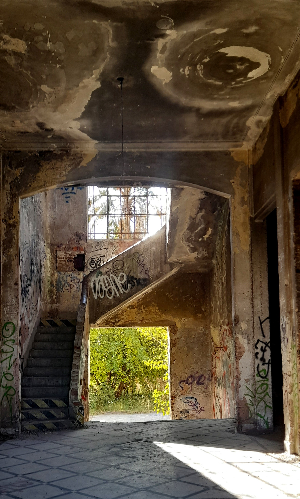
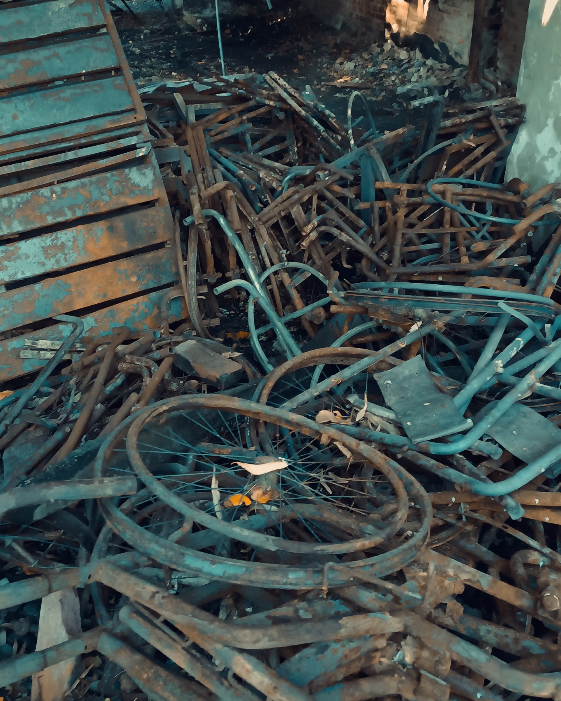
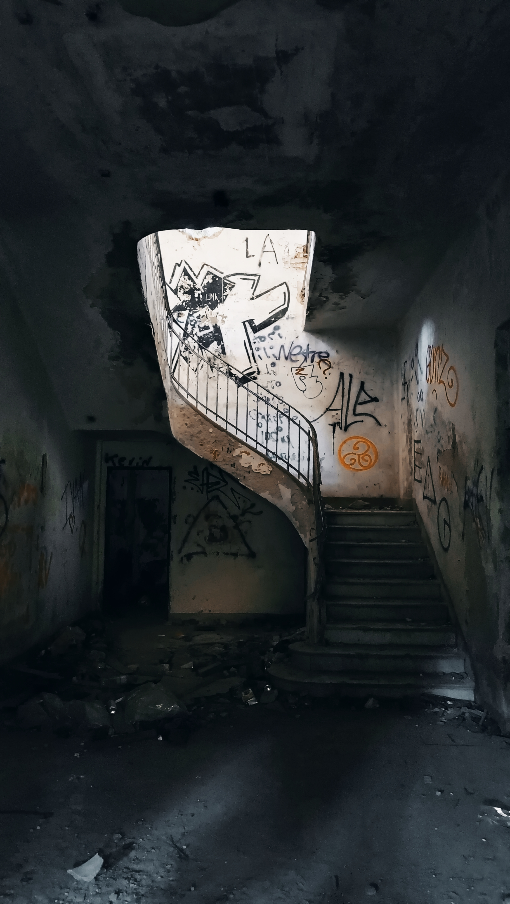
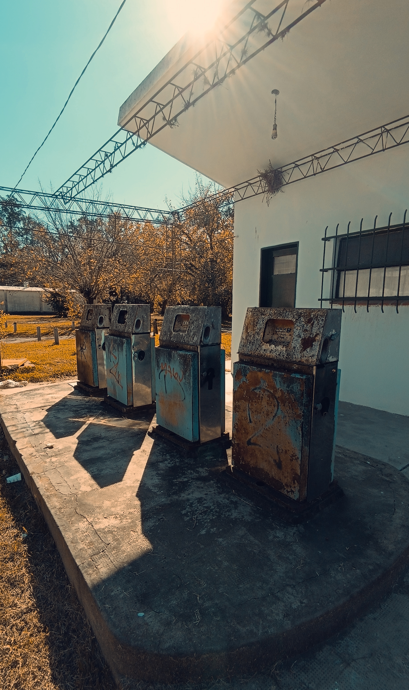

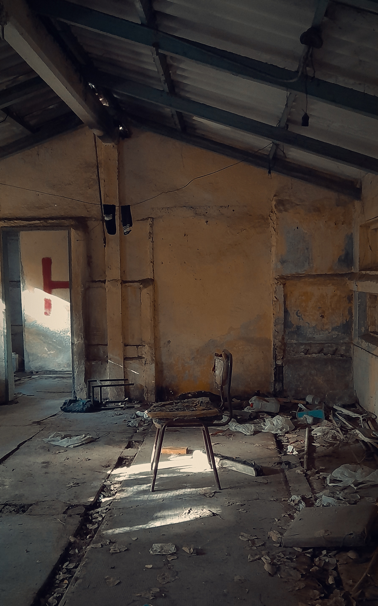
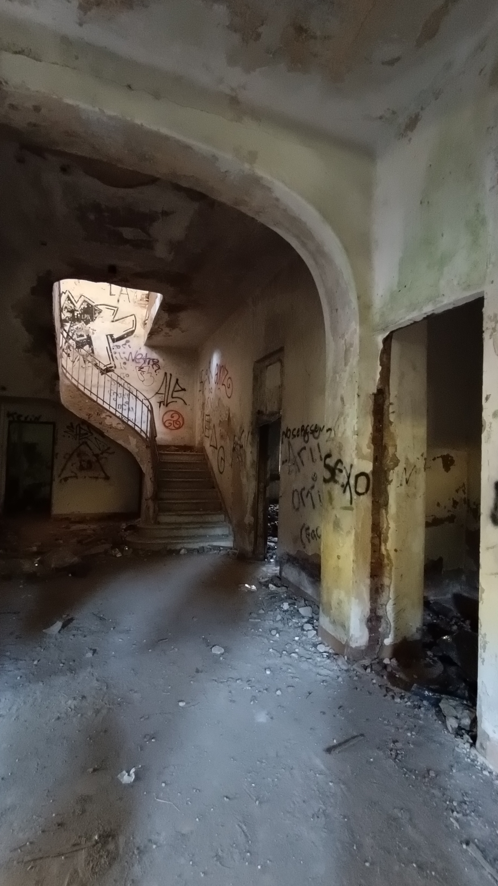
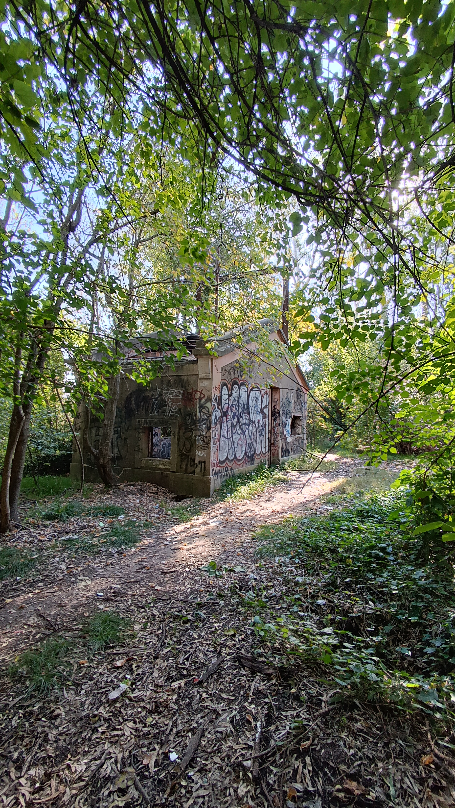


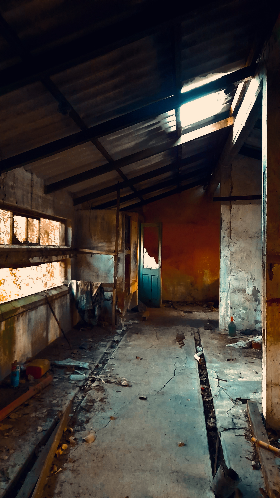
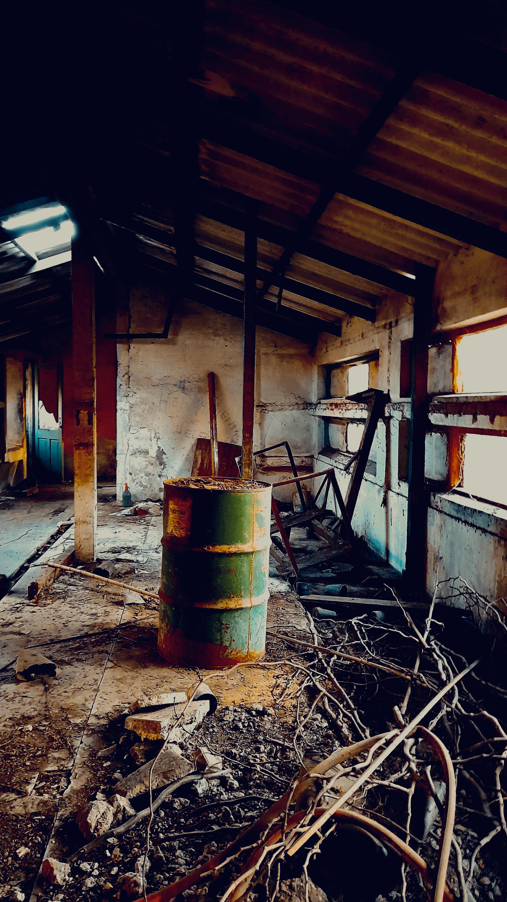
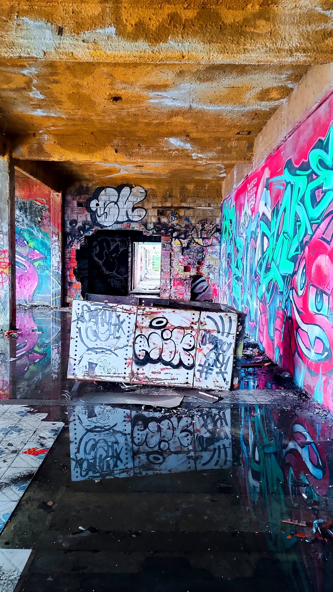
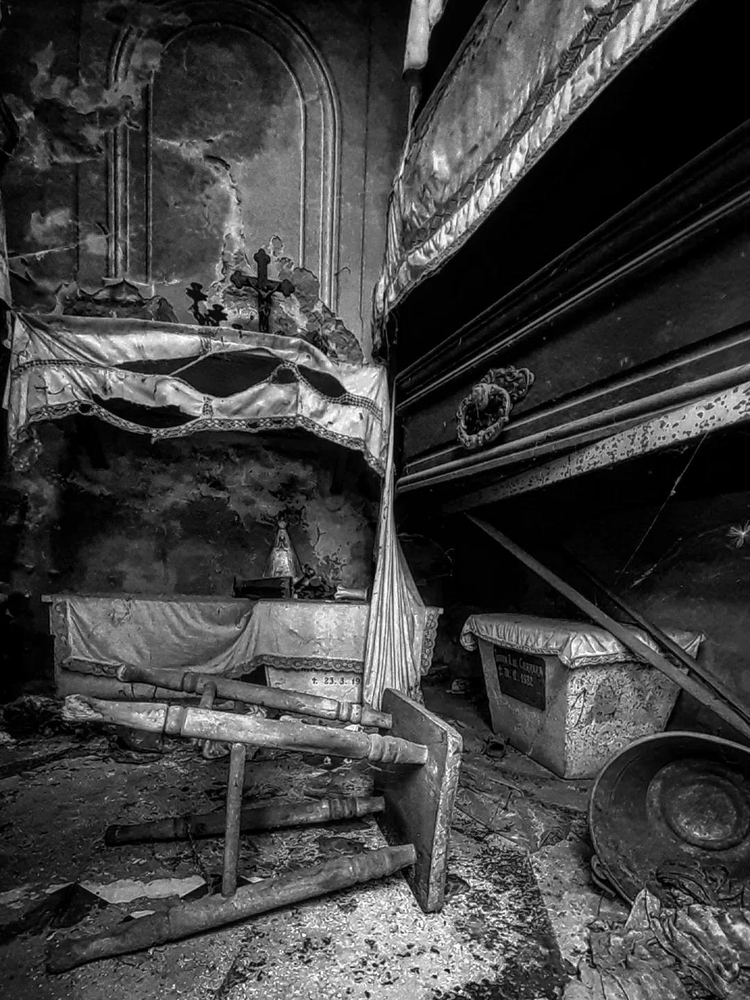